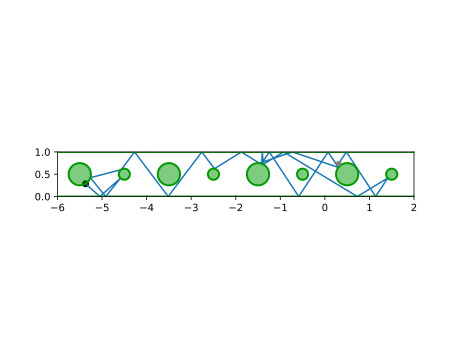
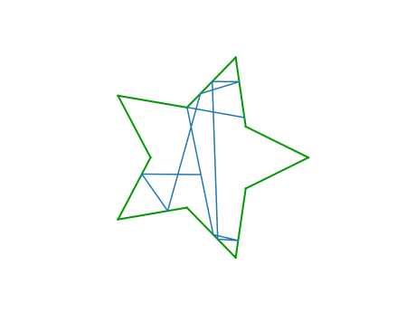

This section has some examples of usage of DynamicalBilliards, with some brief comments.
Julia-logo Billiard
The "Julia-logo-billiard" animation that is the logo of our package was made with the following code. The function billiard_logo also exports the same result.
using DynamicalBilliards, PyPlot
# %%
h = 1.0; α = 0.8; r = 0.18; off = 0.25
cos6 = cos(π/6)
β = (h - cos6*α)/cos6
t = α + 2β
center_of_mass = [0.0, √3*t/6]
startloc = [-α/2, 0.0]
# create directions of the hexagonal 6:
hexvert = [(cos(2π*i/6), sin(2π*i/6)) for i in 1:6]
dirs = [SVector{2}(hexvert[i] .- hexvert[mod1(i+1, 6)]) for i in 1:6]
frame = Obstacle{Float64}[]
sp = startloc
ep = startloc + α*dirs[1]
normal = (w = ep .- sp; [-w[2], w[1]])
push!(frame, InfiniteWall(sp, ep, normal, "frame 1"))
for i in 2:6
s = iseven(i) ? β : α
T = InfiniteWall #iseven(i) ? RandomWall : InfiniteWall
sp = frame[i-1].ep
ep = sp + s*dirs[i]
normal = (w = ep .- sp; [-w[2], w[1]])
push!(frame, T(sp, ep, normal, "frame $(i)"))
end
# Radii of circles that compose the Julia logo
offset = [0.0, off]
R = [cos(2π/3) -sin(2π/3);
sin(2π/3) cos(2π/3)]
green = Disk(center_of_mass .+ offset, r, "green")
red = Antidot(center_of_mass .+ R*offset, r, "red")
purple = RandomDisk(center_of_mass .+ R*R*offset, r, "purple")
bd = Billiard(green, red, purple, frame...)
# Raysplitting functions for the red circle:
refraction = (φ, pflag, ω) -> pflag ? 0.5φ : 2.0φ
transmission_p = (p) -> (φ, pflag, ω) -> begin
if pflag
p*exp(-(φ)^2/2(π/8)^2)
else
abs(φ) < π/4 ? (1-p)*exp(-(φ)^2/2(π/4)^2) : 0.0
end
end
newoantidot = ((x, bool) -> bool ? -2.0x : -0.5x)
raya = RaySplitter([2], transmission_p(0.5), refraction, newoantidot)
# Create and animate particles
N = 5
particles = [MagneticParticle(-0.3, 0.7 + 0.0005*i, 0.0, -2.0) for i in 1:N]
cs = [(0, 0, i/N, 0.75) for i in 1:N]
animate_evolution(particles, bd, 10.0, (raya,);
colors = cs, disable_axis = true)Mean Free Path of the Lorentz Gas
using DynamicalBilliards
bd = billiard_lorentz(0.2) #alias for billiard_sinai(setting = "periodic")
mfp = meancollisiontime(randominside(bd), bd, 1000000.0)2.183714590416699The result is very close to the analytic result:
$\text{m.f.p.} = \frac{1-\pi r^2 }{2r} \stackrel{r=0.2}{=} 2.18584$
which you can find for example here.
Semi-Periodic Billiard
DynamicalBilliards allows for your system to be periodic in only some specific directions. For example, the following code produces a billiard that is periodic in only the x-direction:
using DynamicalBilliards, PyPlot
o = 0.0; x = 2.0; y=1.0
sp = [o,o]; ep = [o, y]; n = [x,o]
leftw = PeriodicWall(sp, ep, n, "Left periodic boundary")
sp = [x,o]; ep = [x, y]; n = [-x,o]
rightw = PeriodicWall(sp, ep, n, "Right periodic boundary")
sp = [o,y]; ep = [x, y]; n = [o,-y]
topw2 = InfiniteWall(sp, ep, n, "Top wall")
sp = [o,o]; ep = [x, o]; n = [o,y]
botw2 = InfiniteWall(sp, ep, n, "Bottom wall")
r = 0.25
d = Disk([0.5, 0.5], r)
d2 = Disk([1.5, 0.5], r/2)
bd = Billiard(leftw, rightw, topw2, botw2, d, d2)
p = randominside(bd)
p.pos = [0.311901, 0.740439]
p.vel = [0.548772, 0.835972]
xt, yt, t = timeseries(p, bd, 25)
plot(bd, xt, yt)
scatter(xt[end], yt[end], color = "black")
ylim(0,y)
xlim(floor(minimum(xt)), ceil(maximum(xt)))
Star billiard
using DynamicalBilliards, PyPlot
v = DynamicalBilliards.polygon_vertices(0.5, 5, [0,0], 0)
v2 = DynamicalBilliards.polygon_vertices(0.25, 5, [0,0], π/5)
vstar = []
for i in 1:5
push!(vstar, v[i], v2[i])
end
bd = billiard_vertices(vstar)
plot(bd)
xt, yt = timeseries(randominside(bd), bd, 10)
plot(xt, yt)